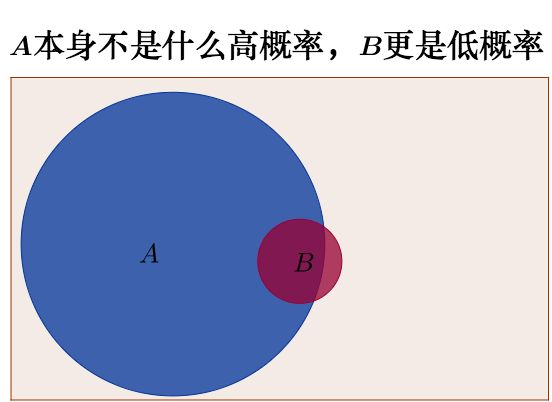
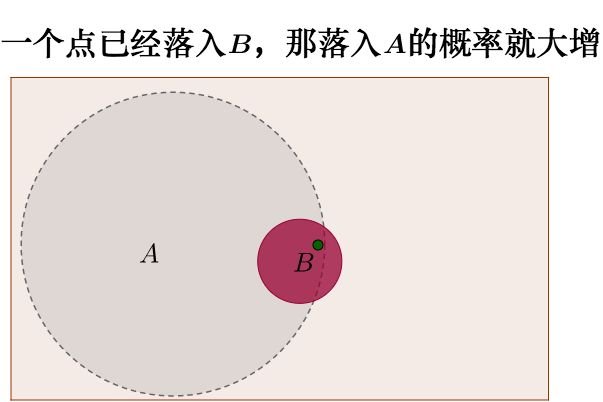
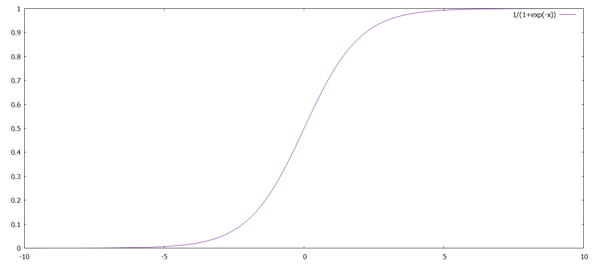

极大似然估计法
极大似然估计详解
贝叶斯公式
贝叶斯公式讲述了一个条件概率的问题，公式如下：
P(A∣B)=P(A)P(B)P(B∣A)
P(A∣B) 指在B发生的前提下，A发生的概率
怎样用非数学语言讲解贝叶斯定理（Bayes’s theorem）
上面这篇用一个很形象的例子讲述了贝叶斯公式，它作出了如下假设：
- P(A)=5%：马路上于到十字路口的概率
- P(B)=2%：车辆打右转向灯的概率
- P(A∣B)=?：车辆打右转向灯时，遇到十字路口的概率
- P(B∣A)=25%：在经过十字路口的时候，车辆会打右转向灯的概率
将上面的假设带入公式就是，本来原本遇到十字路口的概率是很低的，但如果前面的车辆在打转向灯，前面遇到十字路口的概率就大大提高了。
将公式总结一下就是：新信息出现后A的概率=A概率×新信息带来的调整


似然函数
似然函数就是，假设需要求某参数θ。给出一系列的样本(xi,yi)，出现θ的概率密度是l(θ)
l(θ)=p(x1,x2,...,xn∣θ)=Πp(xi∣θ)
一般为了方便会取对数似然进行分析:
H(θ)=lnl(θ)
通过求导数，当H(θ)取最大时，θ即为所估计值。
dθdl(θ)=dθdH(θ)=0
对数几率回归
我们在做分类任务的时候，得到的数据往往是离散的0/1值，这对于我们使用回归任务学习比较麻烦，此时我们可以使用近似离散的模型去近似它。这里我们先讨论理想的“单位阶跃函数-(unit-step function)”
阶跃函数
单位阶跃函数：
y=1+e−z1

该函数可以近似离散的零一值为连续值，我们使用的分类也可以由这种方式表示。
ln1−yy=z
将我们的样本带入z，就可以得到函数：
ln1−yy=wTx+b
对数几率
上面提到的公式中y和1−y可以被运用得很巧妙，在执行分类任务时，我们一般表示如下：
y=p(y=1∣x);
1−y=p(y=0∣x);
此时：
lnp(y=0∣x)p(y=1∣x)=wTx+b
运用“对数似然法”，就可以近似求出假定的w和b的极大似然值。